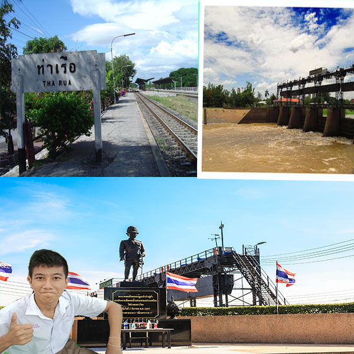

ประวัติอำเภอท่าเรือ
อำเภอท่าเรือเดิมเรียกว่า นครน้อย ต่อมาประมาณปี 2459 ได้เปลี่ยนชื่อเป็น อำเภอท่าเรือ ใช้เป็นสถานที่จอดพักขบวนเรือพระที่นั่งของพระมหากษัตริย์ ในอดีต ในสมัยรัชกาลที่5
แห่งกรุงรัตนโกสินทร์ ต่อมา สมเด็จพระบรมวงศ์เธอ กรมพระนราธิปประพันธ์พงศ์ ได้ทรงสร้างทางรถไฟเล็กขึ้นใช้เป็นเส้นทาง รับ-ส่ง คนโดยสาร ไปนมัสการพระพุทธบาท ที่อำเภอพระพุทธบาท จังหวัดสระบุรี
ปัจจุบันนี้ คือ ถนนสายท่าเรือ-พระพุทธบาท
วันที่ 26 ธันวาคม 2487 จัดตั้งเทศบาลตำบลท่าเรือ ในท้องที่บางส่วนตำบลท่าเรือ
วันที่ 1 กุมภาพันธ์ 2506 จัดตั้งสุขาภิบาลท่าหลวง ในท้องที่บางส่วนของตำบลท่าหลวง(เขตองค์การบริหารส่วนตำบลไก่จ้น ในสมัยนั้น) บางส่วนของตำบลท่าเรือ และ บางส่วนของตำบลจำปา และ ยุบองค์การบริหารส่วนตำบลไก่จ้น (ในสมัยนั้น)
วันที่ 21 ตุลาคม 2517 โอนพื้นที่ตำบลท่าเรือที่อยู่นอกเขตเทศบาลตำบลท่าเรือ (ในสมัยนั้น) ไปขึ้นกับตำบลจำปา
วันที่ 25 ธันวาคม 2524 เปลี่ยนแปลงเขตเทศบาลตำบลท่าเรือ ให้ครอบคลุมตำบลท่าเรือทั้งหมด
วันที่ 25 พฤษภาคม 2542 ยกฐานะจากสุขาภิบาลท่าหลวง เป็น เทศบาลตำบลท่าหลวง